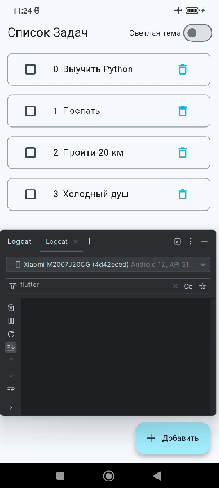
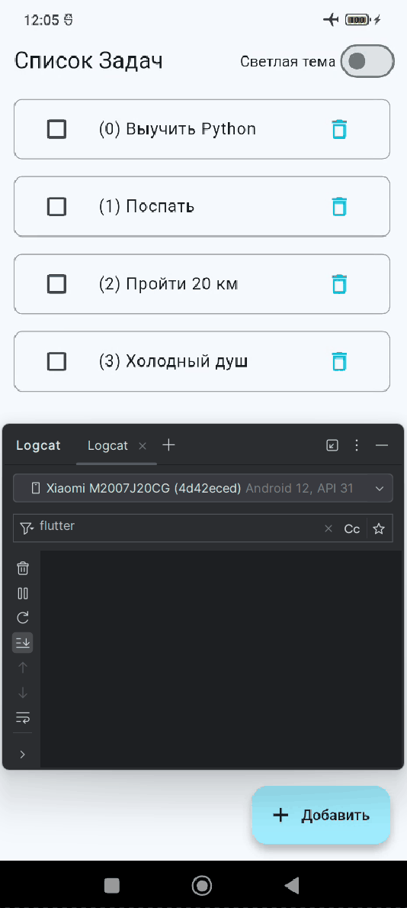

Оптимизация приложения
Прежде чем перейти к реализации сервиса через SQLite, хочется немного улучшить производительность приложения.
Если, добавить дебаг принты в конструкторы экрана и элемента списка, то можно заметить одну очень не приятную картину.
Проблема. Виджеты часто перестраиваются
Например, при выборе чекбоса только у одного элемента зачем - то перестраиваются все остальные элемента списка! При увеличении количества виджетов, это заметно повлияет на скорость работы UI.
При каждом изменении чекбокса, перестраивается весь экран ToDoScreen и каждый из виджетов TaskItem (в данном случае в списке 4 задачи)
Дополнительно добавили для каждого виджета в метод build() вывод print c сообщением.
Для того чтобы увидеть сколько раз происходит перерисовка виджетов.
Вывод в консоль


I/flutter (10255): 🔴 ToDoScreen build
I/flutter (10255): 🔴 TaskItem build
I/flutter (10255): 🔴 TaskItem build
I/flutter (10255): 🔴 TaskItem build
I/flutter (10255): 🔴 TaskItem build

Решение. Улучшаем производительность
0. Файлы моделей, вьюмоделей и сервиса без изменений
1. Добавим для каждого TaskItem ключ
Добавим для каждого TaskItem ключ ValueKey(task.id)
Добавление ключа в TaskItem
TaskItem(
key: ValueKey(task.id), // 👉 Добавляем уникальный ключ
task: task
);
2. Для виджета ToDoScreen добавим Selector и Consumer
Selector для размера списка tasks.length внутри модели ToDoViewModel
- Для того чтобы каждый раз не перестраивать весь список задач через
ListView.builderподпишемся на изменение ТОЛЬКО длины списка с задачи tasks - То есть список с задачами
ListView.builderбудет перестраиваться только когда в него добавляется или удаляется задача (изменяется размер списка)
Consumer для переключателя темы
- Для того чтобы лишний раз не перестраивать всё что есть на экране при переключении
Switchбудем перестраивать только этотSwitchиText
Файл todo_screen.dart
Файл todo_screen.dart
class ToDoScreen extends StatelessWidget {
const ToDoScreen({super.key});
@override
Widget build(BuildContext context) {
// Следим только за количеством задач
// Чтобы каждый раз не перестраивать ListView
final taskCount = context.select<ToDoViewModel, int>(
(vm) => vm.tasks.length,
);
return Scaffold(
appBar: AppBar(
title: const Text('Список Задач'),
actions: [
// Используем Consumer, чтобы лишний раз не перестраивать ListView
Consumer<ToDoViewModel>(
builder: (context, vm, child) => Row(
children: [
Center(
child: Text(vm.isDarkMode ? 'Темная тема' : 'Светлая тема'),
),
Switch(
value: vm.isDarkMode,
// Используем context.read для вызова метода без подписки
onChanged: (_) => context.read<ToDoViewModel>().toggleTheme(),
),
const SizedBox(width: 8),
],
),
),
],
),
body: ListView.builder(
itemCount: taskCount,
itemBuilder: (context, index) {
// Используем context.read, чтобы получить задачу без подписки на изменения
final viewModel = context.read<ToDoViewModel>();
final task = viewModel.tasks[index];
return TaskItem(
key: ValueKey(task.id), // 👉 Добавляем уникальный ключ
taskId: task.id // Передаем только ID, а не весь объект
);
},
),
floatingActionButton: FloatingActionButton.extended(
onPressed: () => _showAddTaskDialog(context),
label: const Text('Добавить'),
icon: const Icon(Icons.add),
),
);
}
void _showAddTaskDialog(BuildContext context) {
// Здесь код без изменений
}
}
3. Для виджета TaskItem добавим Selector
Используем Selector, чтобы подписаться на изменения ТОЛЬКО ОДНОЙ задачи Task
selectorизвлекает конкретную задачу поIDbuilderбудет вызван только если объект этой задачи изменился, в данном случаеisDone
Используем context.read<ToDoViewModel>() чтобы только вызвать методы toggleTaskStatus и deleteTask без подписки на изменения.
Файл task_item.dart
class TaskItem extends StatelessWidget {
final int taskId;
const TaskItem({super.key, required this.taskId});
@override
Widget build(BuildContext context) {
debugPrint("🔴 TaskItem build");
// Используем Selector, чтобы подписаться на изменения ТОЛЬКО одной задачи.
// selector извлекает конкретную задачу по ID.
// builder будет вызван только если объект этой задачи изменился
return Selector<ToDoViewModel, Task>(
// 1. Выбирает конкретный объект Task из списка по заданному ID
selector: (_, viewModel) =>
viewModel.tasks.firstWhere((task) => task.id == taskId),
// 2.Взывается только тогда, когда выбранный Task изменился
builder: (context, task, child) {
// 3. Используется для вызова методов, не подписываясь на обновления.
final vm = context.read<ToDoViewModel>();
return Container(
margin: const EdgeInsets.symmetric(vertical: 8, horizontal: 16),
decoration: BoxDecoration(
border: Border.all(color: Colors.grey),
borderRadius: BorderRadius.circular(8),
),
child: ListTile(
leading: Checkbox(
value: task.isDone,
onChanged: (value) {
vm.updateTaskStatus(task.id, value ?? false);
},
),
title: Row(
children: [
Text("${task.id}"),
SizedBox(width: 8),
Text(
task.text,
style: TextStyle(
decoration: task.isDone
? TextDecoration.lineThrough
: TextDecoration.none,
),
),
],
),
trailing: IconButton(
icon: const Icon(Icons.delete_outline, color: Colors.cyan),
onPressed: () {
vm.deleteTask(task.id);
},
),
),
);
},
);
}
}
4. Демонстрация работы оптимизированного приложения
- При изменении чекбокса, теперь перестраивается только эта задача
- При добавлении и удалении задачи, экран обновляется один раз
- При изменении темы, конечно перестраивается весь интерфейс
